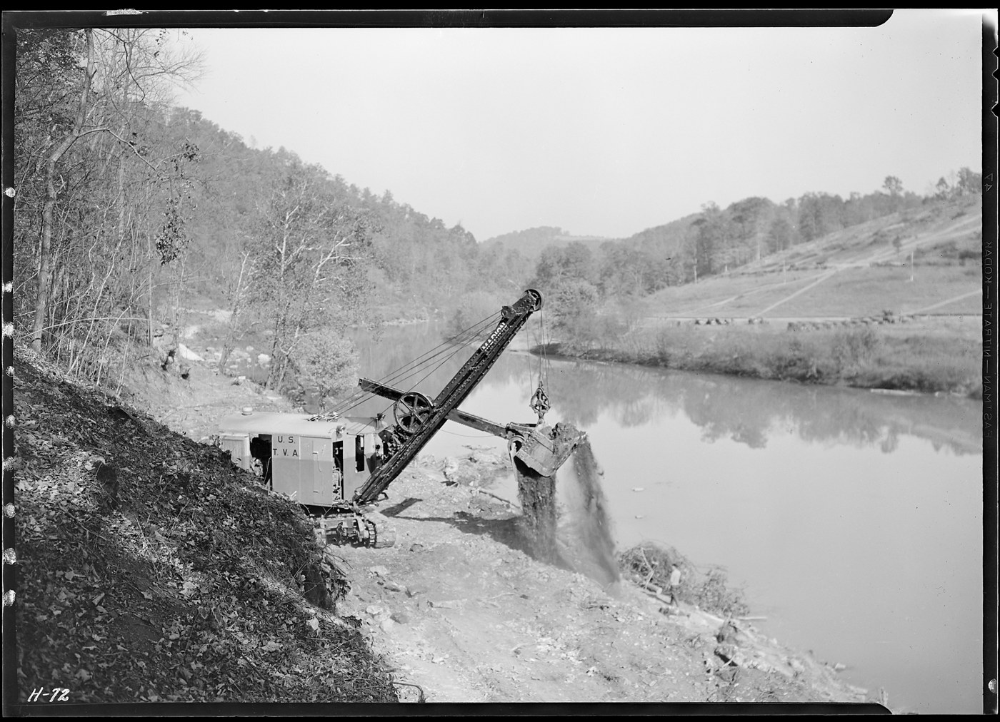
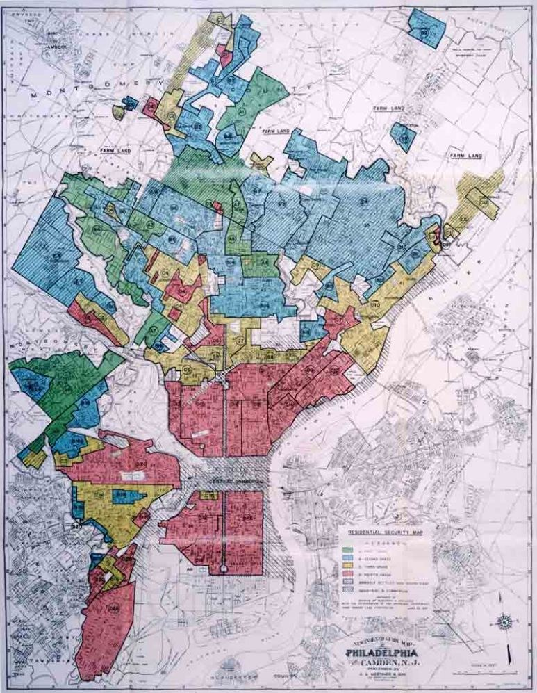

Directions: The evidence of this unit is sorted into four files: the changed state, the physical record, the recovery numbers, and the exclusions. Study each file and answer its question. In Part 2, prepare a one page verdict brief answering the lesson question, with a claim, three pieces of evidence, and the strongest counterargument answered.
Source: The record of the lesson reading, with a photograph held by the National Archives, Record Group 47, Records of the Social Security Administration, National Archives ID 595679.
Before 1933, no federal agency insured a family's bank deposit, policed the honesty of a stock prospectus, promised a worker a pension in old age, or set a floor under wages. By 1939, the Federal Deposit Insurance Corporation insured deposits, the Securities and Exchange Commission regulated the stock markets, the Social Security system taxed wages against old-age and unemployment benefits, a federal labor board enforced the right to organize, and the Fair Labor Standards Act set a minimum wage and overtime past forty hours. None of these was repealed when the emergency passed. Each one still operates.
What single word distinguishes this file's programs from the emergency relief of 1933, and which sentence in the file supports it?
Source: Photograph by Lewis Hine for the Tennessee Valley Authority, October 30, 1933, National Archives ID 532696, with the building record summarized in the lesson reading.

The construction agencies and work programs of the decade raised dams on the Tennessee, Columbia, and Colorado rivers, and brought electric power to farm country the private utilities had passed over. They built or rebuilt bridges, schools, courthouses, post offices, and airports across the country, paved roads, and built the lodges, trails, and campgrounds of the national and state parks. Much of this construction is still in daily use. A dam or a school does not argue; it stands, and each year of use is a further payment on the money spent in the 1930s.
Why does the physical record weigh differently in a verdict than a relief payment does? Answer in terms of time: what does each kind of spending leave behind, and for how long?
Source: Teaching table of unemployment as a share of the labor force, from the standard historical estimates (Lebergott series) used throughout this unit, rounded for classroom use. This file is a teaching table, not a reproduced document.
| Year | 1933 | 1935 | 1937 | 1938 | 1939 |
|---|---|---|---|---|---|
| Unemployment, percent | about 25 | about 20 | about 14 | about 19 | about 17 |
Read the table whole. The rate fell by more than ten points from the depth of the Depression to 1937, the work of recovery and of millions returning to jobs. It then rose again in the recession of 1937 to 1938 and was still about seventeen percent in 1939, ten years after the crash. In no year of the decade did it fall below about fourteen percent. Full employment, a rate near the level of a normal peacetime year, arrived only in the 1940s, under war spending.
Write two verdicts this table supports, one favorable to the New Deal and one unfavorable, each in a single sentence that uses a number from the table.
Source: The record of the lesson reading, with a Home Owners' Loan Corporation security map of 1937, Records of the Federal Home Loan Bank Board, National Archives.

The Social Security Act of 1935 left agricultural and domestic workers outside old-age insurance, an exclusion that fell hardest on Black workers and on women, and those workers waited years for coverage. The Civilian Conservation Corps enrolled young men in segregated camps. Relief administered locally was uneven, and smaller where officials chose to make it smaller. Federal housing officials graded neighborhoods on maps, marked minority districts as risky, and denied the loans that let white families buy homes and build equity. Under local and federal pressure in the early Depression years, repatriation drives removed people of Mexican descent, including many United States citizens, to Mexico. The exclusions were not oversights discovered later. They were written into the laws, the camp rosters, and the maps at the time.
The file's last two sentences claim the exclusions were designed, not accidental. What evidence in the file supports design over accident? Name two pieces and state what each shows.
Prepare your brief here. It answers the lesson question: What did the New Deal change for good, what did it leave undone, and how should it be judged?
Claim. State your verdict in one or two sentences. Name the measure you are judging by.
Evidence. Three pieces, one each from three different files. Cite the file number with each piece, and write one sentence per piece on what it proves.
Counterargument and answer. State the strongest argument against your verdict, from the file you did not use or the side you did not take, and answer it. Do not weaken it before answering; a verdict that survives a weak counterargument proves little.
What word distinguishes these programs from emergency relief, and which sentence supports it? The word is permanence, in any of its forms: permanent, still, standing. The supporting sentence is the closing pair: none of these was repealed when the emergency passed, and each one still operates. Emergency relief, the FERA and the CWA, ended with the emergency; the FDIC, the SEC, Social Security, the labor board, and the wage floor were built as standing parts of the federal government, which is the change in the relationship between Americans and their government that the unit question asks about.
Why does the physical record weigh differently than a relief payment? A relief payment is consumed in the week it is received: it buys food and rent, and when it is gone, nothing remains but the having survived. Construction spending leaves an asset. A dam, a bridge, a school, or a park lodge delivers service every year it stands, so the return on the 1930s expenditure kept arriving for generations, including to people not yet born when it was built. In a verdict, the physical record therefore counts both as Depression spending and as a capital inheritance, which a dole payment, however necessary, cannot.
Write two verdicts the table supports, each with a number. Favorable: the unemployment rate fell from about twenty-five percent in 1933 to about fourteen percent in 1937, a fall of more than ten points under the New Deal's programs, so the New Deal moved the country a long way from the depth. Unfavorable: unemployment never fell below about fourteen percent in any year of the decade and stood at about seventeen percent in 1939, ten years after the crash, so the New Deal did not restore a normally working economy and the Depression ended only under war spending. Both verdicts are drawn from the same table, which is the file's lesson: the numbers do not pick the measure; the historian does, and must say which.
What evidence supports design over accident? Any two, with what each shows. The Social Security Act's occupational exclusions were written into the statute itself, a legislative choice whose racial and gender incidence was understood in 1935, not a clerical slip. The CCC's segregated camps were an administrative structure, built camp by camp, which shows policy rather than oversight. The graded security maps were drawn by federal appraisers as instruments of lending policy, grading whole neighborhoods by their racial makeup; a map is a designed tool. The repatriation drives were organized operations by local and federal authorities, not spontaneous departures. In each case the exclusion has an author and an instrument, which is what design means.
Full credit should be awarded if the brief:
Teacher note on the briefs. The most common failure is a verdict without a measure, usually written as a list of good and bad points ending in a balance metaphor. Send those back for the missing sentence. The second failure is evidence drawn from one file only, most often File 3; the brief format exists to force the changed state and the exclusions into the same judgment as the numbers.